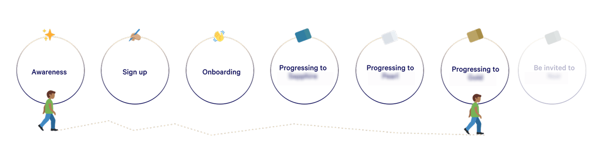
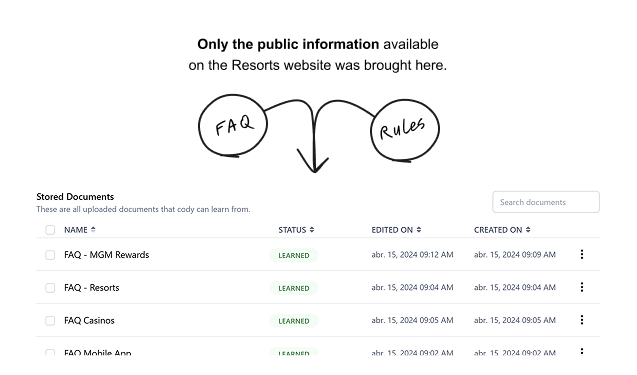
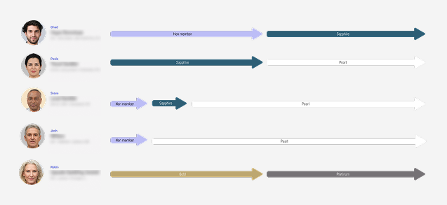
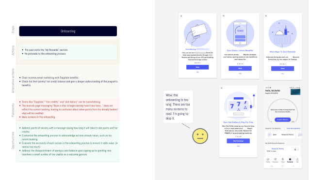
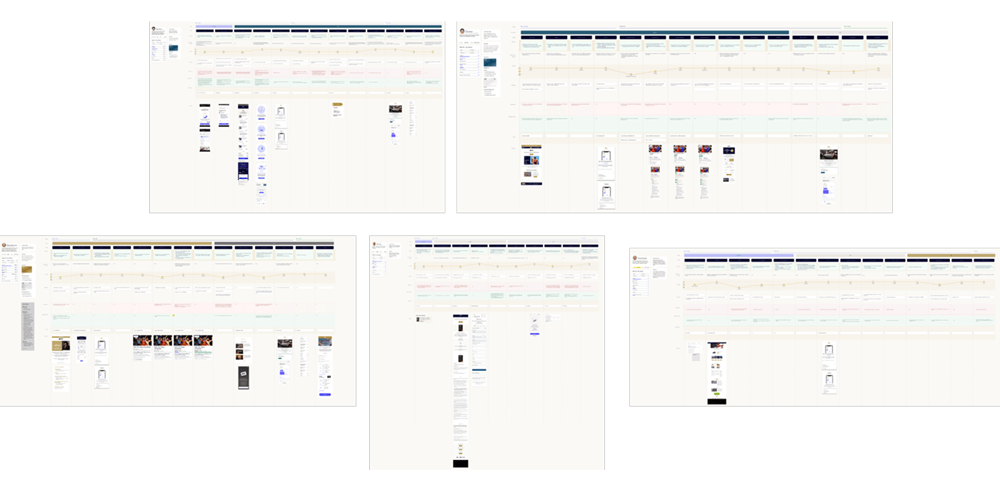
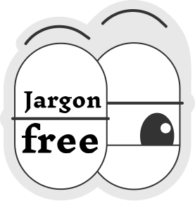
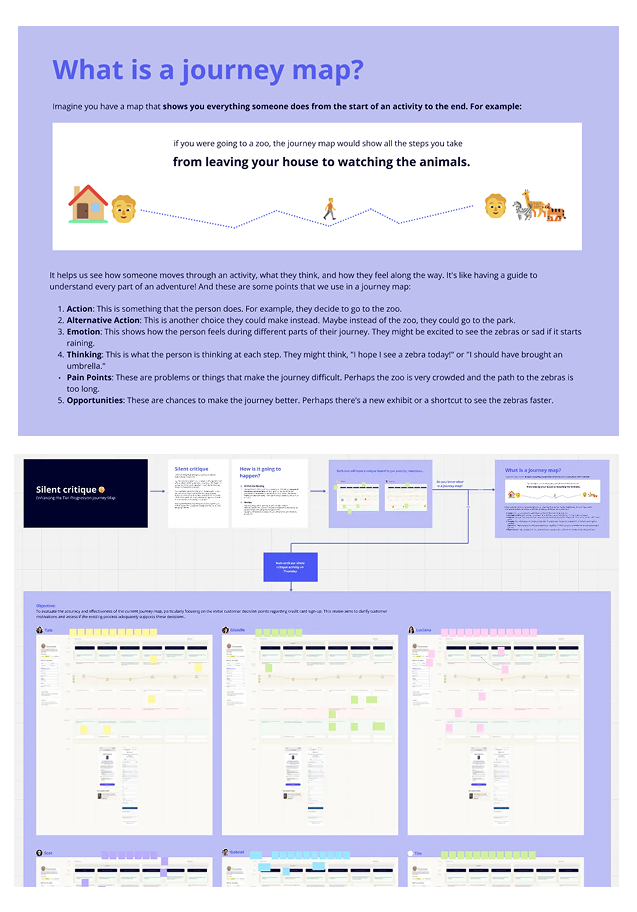
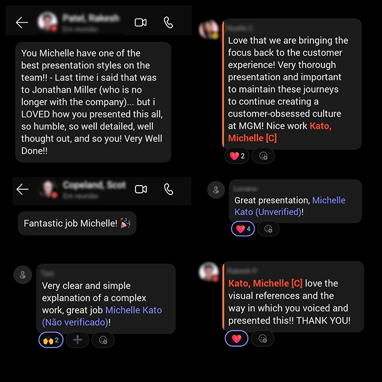

Structuring scattered knowledge into clear, persona-based journey maps — so teams could finally understand the full picture and act on it.
| Project | Structure complex loyalty journey maps across 5 personas to bring clarity, surface gaps, and enable better decision-making for internal teams. |
| Role | Product Designer — worked in duo with Mariana (UX Researcher), combining research depth and design synthesis across the full project. |
| Goals | Understand user progression across tiers · Identify pain points and gaps · Improve clarity for internal teams · Enable better decisions |
| Process | Audit · Desk research (with AI) · Stakeholder interviews · Centralized repository · Persona journeys · Adapted silent critique · Synthesis & presentation |
| Outcomes | Clear persona-based journey maps · Centralized knowledge · Improved cross-team alignment · Strong positive feedback from stakeholders and leadership |
Note: This project is shared with permission. Sensitive details and company name have been omitted.
Journey maps, rules, and documentation lived across multiple tools and formats. Nobody had the full picture — they had pieces of it.
At the same time, the loyalty system was genuinely complex: multiple tiers, rules that varied by context, and interactions that crossed both online and offline channels.
We needed input from multiple areas to get this right. But the conditions weren't easy.

The goal wasn't just to document the journey. It was to make it usable for decision-making.
When teams can see the full picture — across tiers, personas, and touchpoints — they stop working from assumptions and start working from shared understanding.
This work was developed in early 2024, when AI tools were still evolving rapidly. The domain was complex — many rules, edge cases, and tier-specific logic — and time was limited.
How I used Cody AI on this project
Grounded only in official Help Center documentation — no internal or sensitive data.
Used to accelerate understanding of rules and edge cases during desk research.
All outputs were validated with stakeholders before being used in deliverables.
AI supported the process. Decisions remained human.

Centralized repository — all journey maps, documents, and references in one place
Splitting the experience into 5 persona-based journeys was the key decision. Instead of one overwhelming document, each map focused on a specific user and their path through the loyalty program.
Each journey included actions, pain points, opportunities, and both online and offline touchpoints — giving teams a complete view without the noise.

One of the 5 persona-based journey maps — actions, pain points, and opportunities across touchpoints

Overview of all 5 journeys organized in the centralized hub

Traditional critique sessions weren't going to work here. The material was too complex to review at once, and most participants weren't designers.

I adapted the silent critique format: broke the journey into smaller parts, ran short focused sessions, and collected feedback independently — so no one voice anchored the rest.
Why this matters: When participants review independently, the feedback reflects what they actually think — not what they heard someone else say first.

Adapted silent critique — short, focused sessions with independent feedback from cross-functional stakeholders
The journey maps became the go-to reference across teams. Complex flows that were previously difficult to discuss became easy to navigate and act on.
The feedback was strong — from stakeholders and leadership — specifically for clarity, structure, and how the work was communicated.

Final synthesis presented to designers and leadership
After this project, I wrote about how the silent critique method can be adapted for complex journey maps — so other designers could use it too.
Lack of structure is. When information is clear and accessible, teams align faster and make better decisions.
The work wasn't about simplifying the loyalty program. It was about making it possible to understand — so the people who needed to act on it actually could.